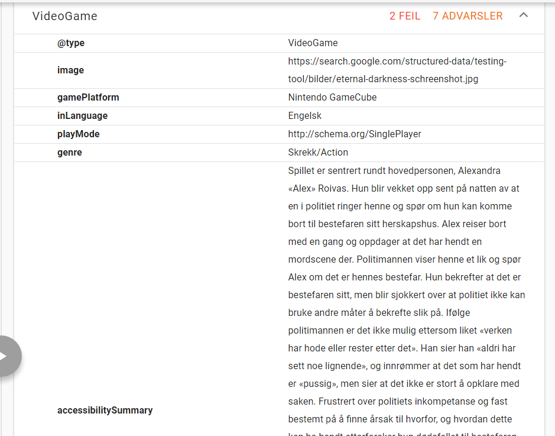
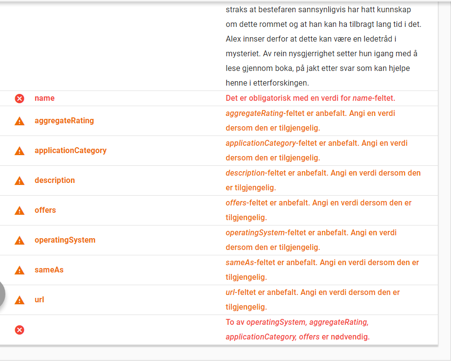
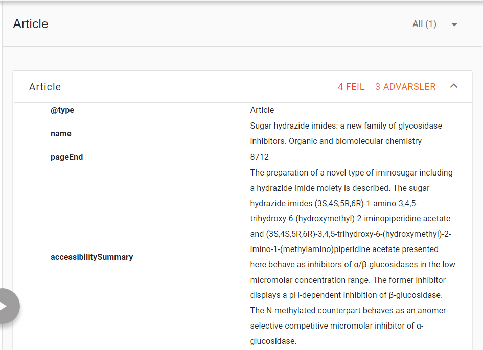
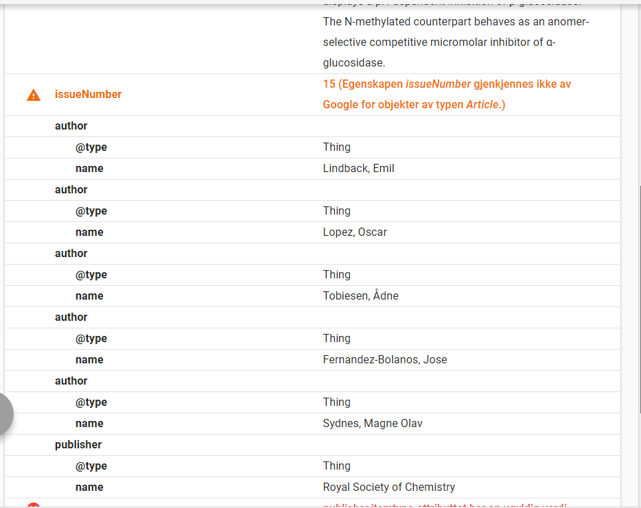
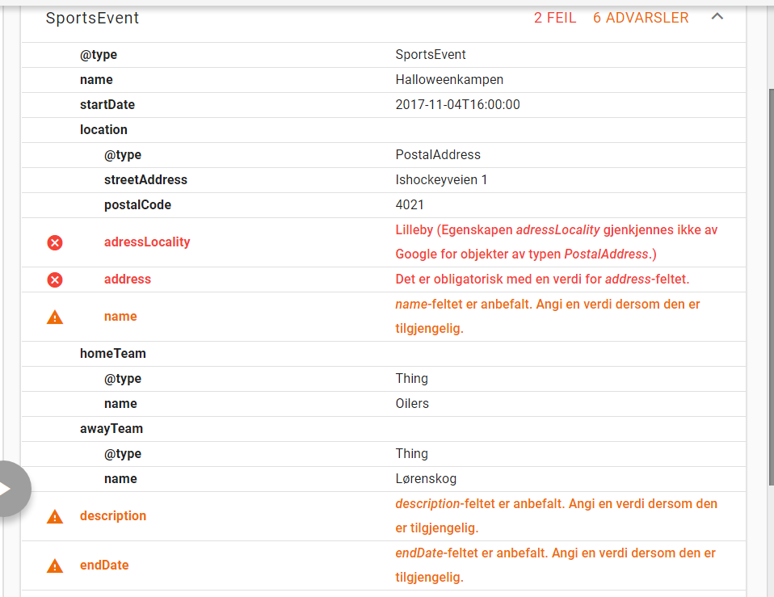
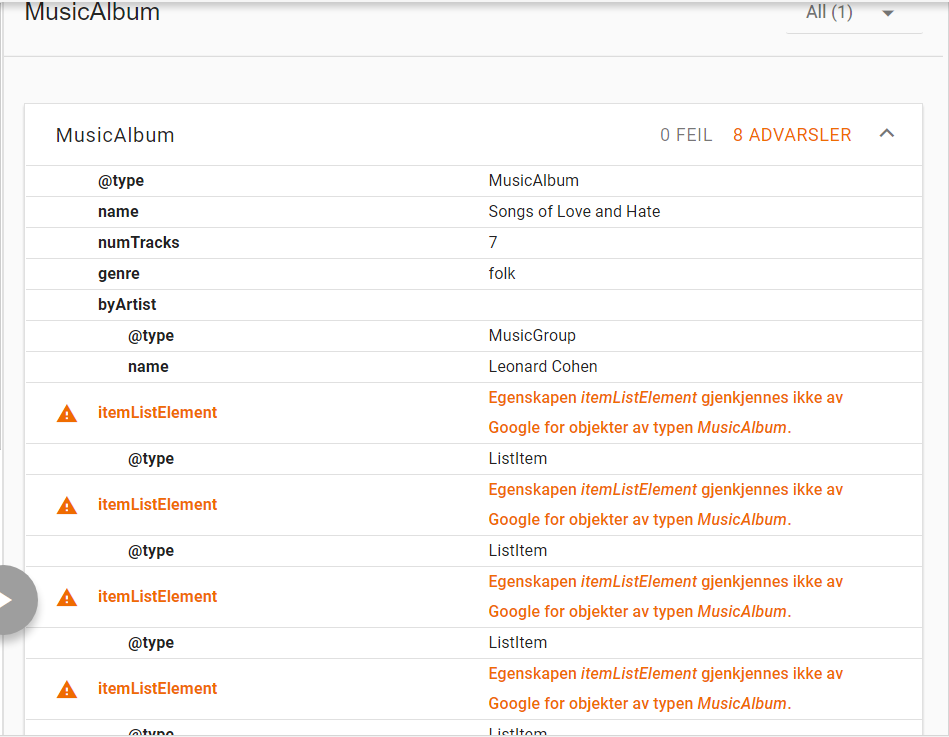
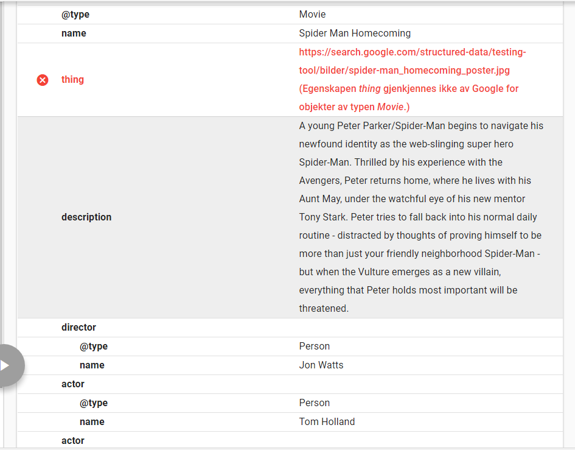
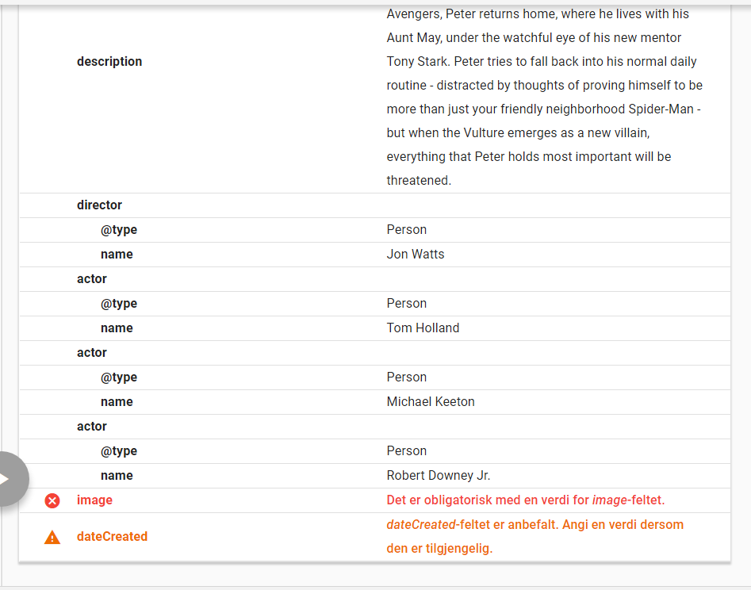

Oppgave 3: Eksperimentering med micro-data og Rich-snippets
Kort om microdata
Det nyeste verktøyet for søkemotorer er microdata.
Dette brukes på div. sider for å gi innholdet en kontekst, kontekst her er mer direkte enn de vanlige HTML-taggene og de nye semantiske taggene som brukes innen HTML-5.
Dette kan være å hjelpe maskinen å tolke et tidspkt, å finne ut tid, å finne sted etc. Maskinen kan ellers ikke finne ut slikt på egenhånd. Resultatet tolkes, og settes inn på landingsplassen for de ulike temaene på Google. Resultatet blir noe som kalles rich-snippets. Nedenfor vises et eksempel på hvordan dette kan se ut etter vi er ferdige med kodingen.
I denne oppgaven har jeg lagd 5 ulike eksempler som bruker microdata, eksemplene kan besøkes ifra listen under.
Spillartikkelen er også knyttet imot Twitter, Facebook og Google+:
Spillet er i dette tilfellet "Eternal Darkness Sanity's Requiem". Selve artikkelen starter med
<article itemscope = "itemscope" itemtype ="http://schema.org/VideoGame" > . Denne sier at hele innholdet i artikkelen involverer dette eksakte videospillet, og må forstås i sammenheng. Innenfor denne artikkelen, vil vi bruke diverse attributter som omhandler sjanger, platform, antall spillere, utgiver, utvikler, utgivelsesdato, sjanger, screenshot (Som kan brukes generelt på alle schema). I prinsippet kan vi gå ennå dypere enn dette (Dess mer informasjon, jo bedre), men dette vil gi en pekepinn på hvordan systemet fungerer ihvertfall. Nedenfor har jeg lagt ved noen bilder for hvordan dette tolkes som rich-snippets.


Bilder for hvordan validatoren til Google tolker microdataen i spillartikkelen.
Vitenskapelig artikkel
Den valgte artikkelen er en hvor jeg står som bidrager og omhandler forskning på glykosidase-inhibitorer.
itemtype settes i dette tilfellet lik http://schema.org/Article. Valgte attributer er "name", "datecreated", "author", "issueNumber", "publisher", "publisher", "pagestart", "pagestop" og "accessibilitySummary". Disse taggene er knyttet til selve artikkelen og betyr eksakt hva man forventer at de vil bety. Nedenfor har jeg gitt bilder for hvordan det ser ut i richsnippet hos Google.com. Det må nevnes at Google sin rich-snippets er mer strikt enn både Schema sine hjemmesider, og læreboken.


To bilder som viser hvordan Google sin validator tolker den vitenskapelige artikkelen.
Sportsarrangement
Det valgte arrangementet er en Oilers - Lørenskog ishockeykamp som skjedde lørdag den 04.11.17.
Denne gang er itemtype ="http://schema.org/sportsEvent"
I dette eksempelet har jeg markert hjemme/bortelag, tid, dato og adresse. For å se hvordan dette ser ut i Rich Snippets, se bildene under.

Et bilde som viser hvordan Validatoreni til Google tolker sportsarrangementet.
Musikkalbum
Det valgte albumet er "Songs of Love and Hate" av Leonard Cohen.
Artikkelen starter i dette tilfellet med at itemtype = "http://schema.org/MusicAlbum".
Til tross for at Leonard Cohen var en soloartist, må navnet hans inkapsles i en gruppe, slik som dette:
< span itemprop = "byArtist" itemtype= "http://schema.org/MusicGroup" > .I prinsippet, hvis vi ønsker å spille av sangene hans eller laste opp musikken hans (Som ikke er lovlig), kan vi finne visse attributter for både sanglengde. Nedenfor vises det hvordan Google tolker rich-snippets.

Et bilde for hvordan Google tolker musikkalbums-artikkelen.
Film
Den valgte filmen er "Spiderman: Homecoming". < article itemscope itemtype = "http://schema.org/Movie" > er starten på artikkelen, i prinsippet kan man gå veldig dypt, både med å inkludere annmeldelser, flere skuespillere, manusforfattere, produsenter, filmselskap, musikk. I dette tilfellet har jeg valgt å gjøre det ganske simpelt, ved å ta kun noen hovedroller, regissør, navn på film, beskrivelse etc. Resultatene for hvordan Google tolker dette vises nedenfor.


To bilder for hvordan Google tolker film-artikkelen
{kind=link}
{kind=link}
{kind=link}
{kind=link}
{kind=link}
{kind=link}
{kind=link}
{kind=link}